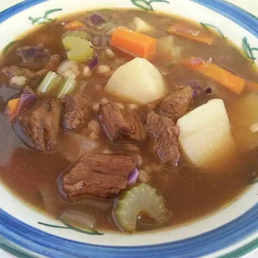

Beef Soup

this photo is from Barb on AllRecipes
Description
This is what I consider the ultimate beef soup. Great on a frosty day. For beef stock, I use 2
1/2 quarts water and 6 teaspoons beef base. Also, use inexpensive red wine. No need for the good stuff here, and
cheaper actually works better! Try with leftover pot roast.
Ingredients
- 1 tablespoon vegetable oil
- 1 ½ cups chopped onion
- 1 cup chopped celery
- 1 cup chopped carrots
- 2 cloves garlic, minced
- 10 cups beef stock
- ¾ cup barley
- 1 bay leaf
- sprigs fresh thyme, chopped
3
- ½ cup red wine
- 2 cups cubed potatoes
- 2 cups diced cooked beef
- 1 teaspoon browning sauce (Optional)
- 1 ½ cups chopped cabbage
- salt and pepper to taste
Steps
-
Step1
In a large pot over medium heat, combine the oil, onions, celery,
carrots, and garlic. Saute for 5 minutes, or until tender. Add the beef stock, barley, bay leaf and
thyme and simmer until barley is softened but not mushy. Add the wine, potatoes and beef.
-
Step2
Add the browning and seasoning sauce now if you want your soup to have
more of a brown color. Simmer another 15 minutes and add the cabbage. Allow to simmer another 15
minutes, or until all vegetables are tender. Salt and pepper to taste.
You may also interest in these recipes:
Home